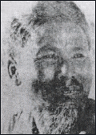

Nguyên Hồng
(1918-1982)
Tên thật: Nguyễn Nguyên Hồng, sinh ngày 5 tháng 11 năm 1918 tại thành phố Nam Định. Mất ngày 2 tháng 5 năm 1982 tại Yên Thế (Bắc Giang). Đảng viên Đảng Cộng sản Việt Nam. Hội viên sáng lập Hội Nhà văn Việt Nam (1957).
Sinh trưởng trong một gia đình nghèo, sớm mồ côi cha, ngay từ nhỏ, Nguyên Hồng đã phải cùng mẹ ra Hải Phòng lần hồi kiếm sống trong các xóm thợ nghèo. Ông dạy học tư và viết văn. Những năm 1937 - 1939, ông tham gia phong trào mặt trận dân chủ Hải Phòng. Sáng tác của Nguyên Hồng trước Cách mạng thường đăng trên các báo, tạp chí: Tiểu thuyết thứ bảy, Đông phương… Tháng 9 năm 1939, ông bị Pháp bắt. Năm 1940 ra tù ông lại bị thực dân Pháp đưa đi trại tập trung ở Bắc Mê (Hà Giang) và sau đó bị quản thúc ở Nam Định (11-1941). Năm 1943, Nguyên Hồng tham gia đội Văn hóa cứu quốc bí mật và Tạp chí Tiền phong.
Nguyên Hồng tham gia tổng khởi nghĩa Tháng Tám năm 1945 ở Hà Nội. Trong thời kỳ kháng chiến chống Pháp, ông hoạt động ở đội văn nghệ Việt Nam (từ 1947 - 1957), tham gia biên tập tạp chí Văn nghệ và trong ban phụ trách Trường văn nghệ nhân dân ở Việt Bắc.
Ông là Uỷ viên Ban chấp hành Hội Nhà văn Việt Nam (khoá I và II). Biên tập viên tạp chí Văn nghệ và trong ban phụ trách tuần báo Văn. Nguyên Hồng còn tham gia phụ trách trường bồi dưỡng lực lượng viết văn trẻ (của Hội Nhà văn Việt Nam), Ban Văn học công nhân và là Chủ tịch Hội Văn nghệ Hải Phòng.
Những năm cuối đời Nguyên Hồng về sống, sáng tác tại Tân Yên (Hà Bắc) và mất tại đó. Nhà văn đã được tặng giải thưởng Hồ Chí Minh về Văn học - nghệ thuật (đợt I, 1996).
Những tác phẩm đã xuất bản:
Bỉ Vỏ (tiểu thuyết, 1938);
Bảy Hựu (truyện ngắn, 1941);
Những ngày thơ ấu (truyện ngắn, 1941);
Qua những màn tối (truyện, 1942);
Cuộc sống (tiểu thuyết, 1942);
Quán nải (tiểu thuyết, 1943);
Đàn chim non (tiểu thuyết, 1943);
Hơi thở tàn (tiểu thuyết, 1943);
Hai dòng sữa (truyện ngắn, 1943);
Vực thẳm (truyện vừa, 1944);
Miếng bánh (truyện ngắn, 1945);
Ngọn lửa (truyện vừa, 1945);
Địa ngục và lò lửa (truyện ngắn, 1946 - 1961);
Đất nước yêu dấu (ký, 1949);
Đêm giải phóng (truyện vừa, 1951);
Giữ thóc (truyện vừa, 1955);
Giọt máu (truyện ngắn, 1956);
Trời xanh (thơ,1960);
Sóng gầm (tiểu thuyết, 1961);
Sức sống của ngòi bút (tạp văn, 1963);
Cơn bão đã đến (tiểu thuyết, 1963);
Bước đường viết văn của tôi (hồi ký, 1971);
Cháu gái người mãi võ họ Hoa (truyện thiếu nhi, 1972);
Thời kỳ đen tối (tiểu thuyết, 1973);
Một tuổi thơ văn (hồi ký, 1973);
Sông núi quê hương,
Khi đứa con ra đời (tiểu thuyết, 1976);
Những nhân vật ấy đã sống với tôi (hồi ký, 1978);
Tù nhà nợ nước (tập I trong bộ tiểu thuyết Núi rừng Yên Thế 1981);
Núi rừng Yên Thế (tiểu thuyết, tập II, 1993);
Tuyển tập Nguyên Hồng (3 tập, tập I: 1983, tập II: 1984, tập III: 1995).